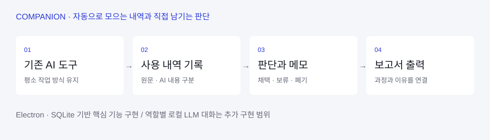
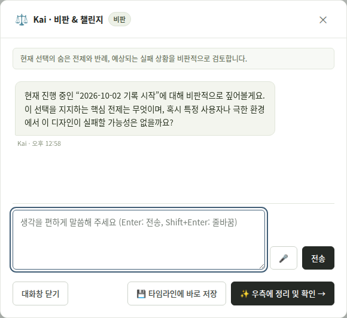
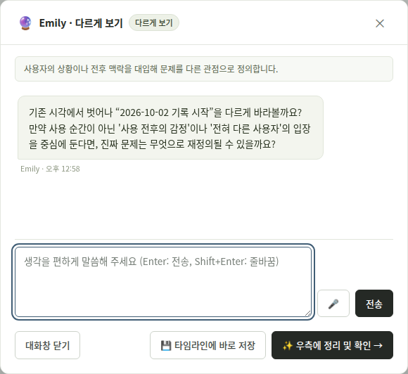
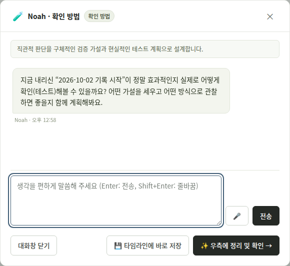
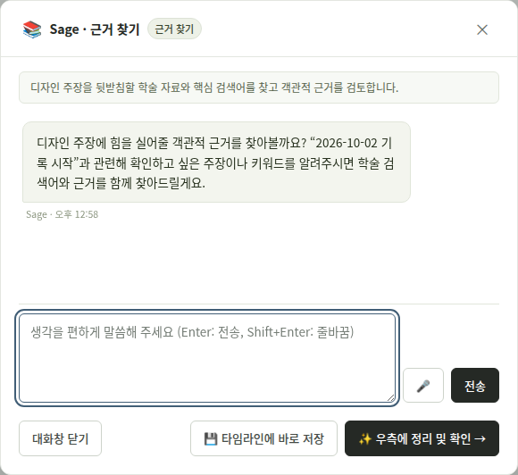

결과물만으로는 보이지 않는
부분 수용과 수정의 판단.
Companion은 서로 다른 두 연구에서 확인한 문제에서 출발했습니다. 먼저 학부생 30명의 웹 워크시트를 단계 단위로 분석한 연구(IJTDE 투고)에서 생성 단계 366건과 반복 루프 68건을 살펴봤고, 기록된 판단 203건 중 118건(58.1%)이 부분 수용이었습니다. 채택 여부뿐 아니라 무엇을 남기고 바꿨는지 기록할 필요가 있었습니다.
이어 박사논문의 1차 파일럿 스터디(DBR)에서는 디자인 전공 수강생의 주간 워크시트 246건을 AI 도입 이전·자유 활용·구조화된 활용 3단계로 전수 코딩하고, 세 단계 모두 추적되는 72명을 종단 패널로 분석했습니다. 결과물의 개념 구체화 수준은 유의미하게 올랐지만(Friedman 검정 χ²=15.88, p<.001), 선택 이유·대안 비교·한계 인식이 드러나는 판단 명시화 수준은 유의미하게 오르지 않았습니다(χ²=3.39, p=.184).
웹 워크시트 단계 분석 · 기록된 판단 중 부분 수용 58.1%(118/203건)
3단계 종단 패널 · 결과물은 구체화됐지만 판단 명시화는 오르지 않은 학생 16명
두 연구 모두 워크시트 방식 자체의 한계를 보여줬습니다. 작업 후에도 작성할 수 있어 판단 시점과 기록 시점이 달라졌고, 파일럿에서는 결과물이 나온 뒤 거꾸로 이유를 지어내는 사후 합리화가 관찰됐습니다. AI 사용 내역을 복사해 다시 입력하는 부담과, 이미지 생성을 멈추고 텍스트를 적어야 하는 흐름의 단절도 있었습니다. 구조화된 AI 활용 단계에서도 학생의 44.4%는 AI 제안을 대안 검토 없이 그대로 수용했습니다.
워크시트를 더 꼼꼼히 쓰게 만드는 대신, 디자인 과정 안에 판단 명시화 자체를 끼워 넣을 수 있을까? 기록의 부담은 낮추고 성찰의 질은 높이는 방향으로.
사용 내역은 자동으로,
판단과 이유는 사용자가.
학생이 평소 쓰는 AI 도구를 그대로 사용하도록 하고, 사용 내역을 Companion으로 모으는 구조를 선택했습니다. 자동으로 모은 내용과 자신의 생각을 구분하며 판단이 필요한 순간에 메모를 남기게 했습니다.
파일럿 스터디가 제시한 기준도 그대로 반영했습니다. 기록 시점을 사후 일괄 작성에서 과정 중 즉각 기록으로, 서술형 텍스트의 인지적 부담을 체크형 인터랙션으로 낮추는 방향입니다.
지원하는 기존 AI 도구의 사용 내역을 수집
채택·보류·폐기와 선택 이유를 기록
작업 과정과 판단 기록을 함께 출력

기록을 편하게 만드는 기능과 사용자의 판단을 대신하는 기능을 구분했습니다. 원문과 AI 생성 내용을 분리하고, 최종 선택과 이유는 사용자가 남기도록 했습니다.
설계부터 개발까지,
수업에서 사용할 도구로.
| 구현 기능 | 제품 동작 | 해결하려는 문제 |
|---|---|---|
| 사용 내역 자동 기록 | 기존 AI 도구의 사용 내역을 모음 | 복사·정리·재입력 부담 |
| 원문과 AI 내용 구분 | 사용자 작성 내용과 AI 생성 내용을 분리 | 자신의 생각과 AI 제안의 혼재 |
| 선택과 이유 기록 | 채택·보류·폐기, 판단 시점의 메모 | 작업 후 기억에 의존하는 설명 |
| 보고서 내보내기 | 작업 과정과 판단 기록을 출력 | 마지막에 여러 기록을 다시 모으는 부담 |
Electron·SQLite 기반 데스크톱 프로토타입을 기획·설계부터 구현까지 단독 수행했습니다. 기존 개발 자료에는 Chrome 확장 프로그램과 기록·보고서 화면이 포함돼 있습니다.

역할별 AI 대화 — 비판 · 다르게 보기 · 확인 방법 · 근거 찾기
전체 흐름 정리 외에, 판단을 더 깊게 만드는 4가지 역할형 AI와의 대화를 구현했습니다. 하단 버튼을 누르면 해당 역할이 현재 작업을 바탕으로 질문을 건네며 대화가 시작됩니다.




화면은 학생 데이터 없이 새 세션을 시작했을 때 각 역할이 건네는 기본 질문입니다. 실제 사용 중에는 직전 작업 내용을 반영해 질문이 달라집니다.
약 27명이 수업에서 사용.
효과 검증은 다음 단계로.
현재 수업에서 핵심 기능 사용
전체 디자인 과정을 대상으로 설계했으며 현재는 발견 단계에 적용
| 범위 | 현재 상태 |
|---|---|
| 기록·판단·보고서 핵심 기능 | 구현 후 수업 사용 중 |
| 역할별 대화 화면 | 추가 구현 · 다음 학기 효과 검증 예정 |
| 입력 부담·사후 작성 감소 | 정량 효과 검증 예정 |
추가로 흐름 정리·비판·다르게 보기·확인 방법·근거 찾기의 역할별 대화 화면을 구현했습니다. 해당 대화 기능은 작업 데이터를 외부 LLM으로 보내지 않도록 Ollama 기반 로컬 LLM(Llama 3)으로 설계했습니다.
로컬 LLM 설명은 해당 대화 기능의 처리 범위입니다. 프로그램 전체의 저장·동기화 기능을 모두 오프라인으로 설명하지 않습니다.
입력 부담과 사후 작성 감소 여부, 역할별 기능의 효과와 개선 요구를 수집·분석할 계획입니다. 두 선행 연구(30명·72명)와 현재 사용자 약 27명은 서로 다른 자료이며, 학습 효과나 시간 절감은 아직 측정 결과로 제시하지 않습니다.